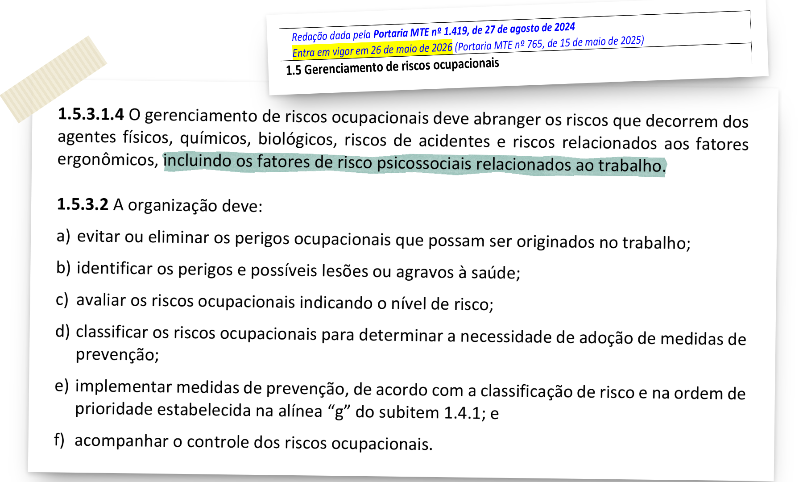
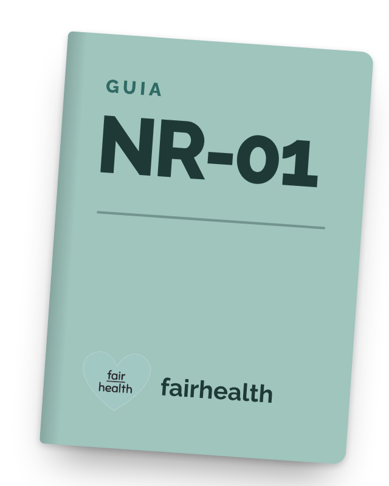

@fairhealth.br01/06
Saúde mental no trabalho
546,2
mil
afastamentos do trabalho
por saúde mental
no Brasil em 2025, concedidos pelo INSS.
Fonte: Ministério da Previdência Social
E agora, RH?
Arraste para o lado →
@fairhealth.br02/06
O dado
546,2 mil licenças por
transtornos mentais em 2025,

o segundo recorde seguido.
472,3 mil
licenças
546,2 mil
licenças
2024
2025
+15,7%
Fonte: Ministério da Previdência Social (nota oficial, jan/2026). Benefícios por incapacidade temporária concedidos pelo INSS por transtornos mentais e comportamentais: 472.328 em 2024 e 546.254 em 2025.

@fairhealth.br03/06
A norma
NR-01
Desde maio de 2026, a NR-01 pede que a empresa identifique e gerencie os riscos psicossociais, junto com os outros riscos ocupacionais.

Fonte: NR-01 (texto atualizado publicado pelo Ministério do Trabalho e Emprego), item 1.5.3.1.4, na redação da Portaria MTE nº 1.419/2024. Em vigor desde 26/05/2026 (Portaria MTE nº 765/2025).
@fairhealth.br04/06
O que é
risco psicossocial
Exemplos da lista do Ministério do Trabalho e Emprego:
01
Assédio de qualquer natureza no trabalho
02
Má gestão de mudanças organizacionais
03
Baixa clareza de papel/função
04
Baixas recompensas e reconhecimento
05
Falta de suporte/apoio no trabalho
06
Baixo controle no trabalho/falta de autonomia
07
Baixa justiça organizacional
08
Eventos violentos ou traumáticos
09
Baixa demanda no trabalho (subcarga)
10
Excesso de demandas no trabalho (sobrecarga)
11
Maus relacionamentos no local de trabalho
12
Trabalho em condições de difícil comunicação
13
Trabalho remoto e isolado
Fonte: Guia de informações sobre os fatores de riscos psicossociais relacionados ao trabalho, Ministério do Trabalho e Emprego (2025). A lista do guia é exemplificativa.
@fairhealth.br05/06
Medir e cuidar:
a norma pede os dois.
Medir
b) Identificar os perigos
c) Avaliar os riscos
d) Classificar os riscos
Com a fairdata: o diagnóstico dos riscos do grupo.
Cuidar
e) Implementar medidas de prevenção
f) Acompanhar o controle dos riscos
Com o Escritório do Cuidado: escuta, acompanhamento e encaminhamento.
→
Fonte: NR-01, item 1.5.3.2, alíneas b a f (Ministério do Trabalho e Emprego).

@fairhealth.br06/06
E agora, RH?

Comente
CUIDADO
e receba o guia de NR-01.
Precisa de ajuda agora? CVV 188.
 @fairhealth.br
@fairhealth.br